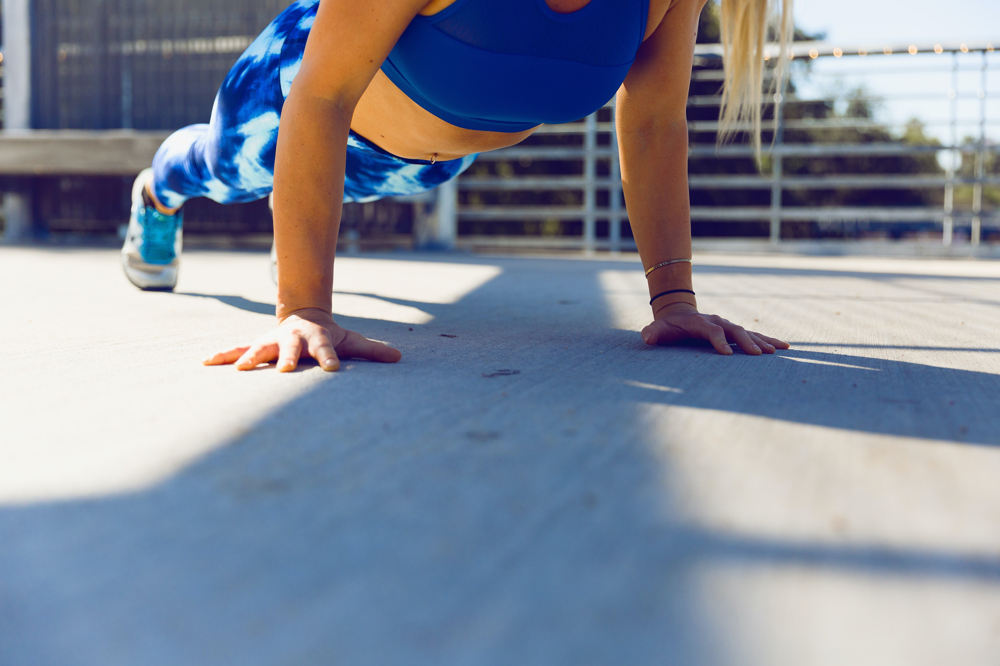
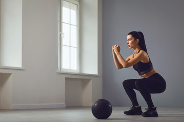
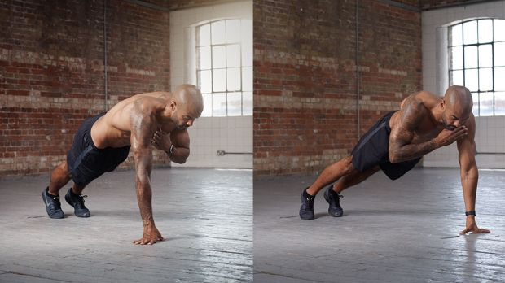
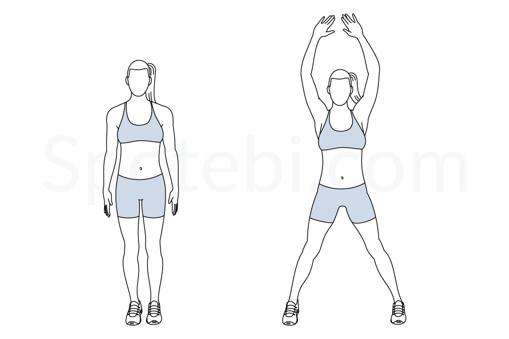
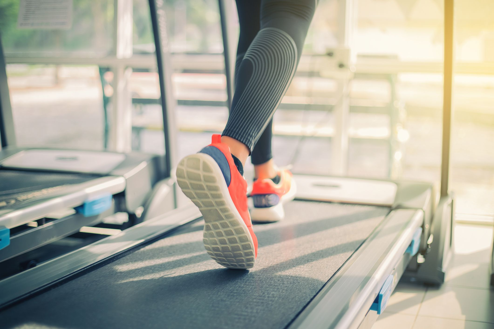
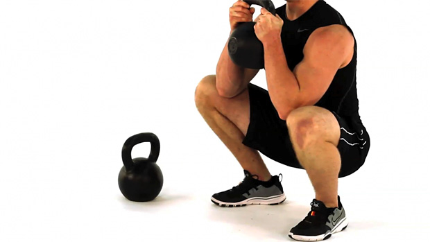
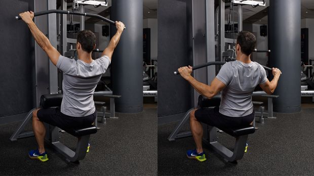
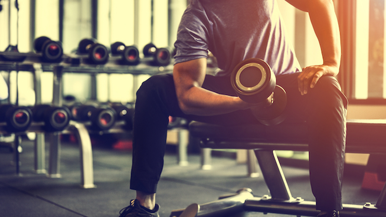

10 Minute HIIT Workout or 10 Minute AMRAP
AMRAP (As many reps or rounds as possible) is a type of High-intensity interval training (HIIT).
This workout is designed for students who may not have much time on their hands, 10 minutes
to do as many reps or rounds as possible. These are very basic excercises but when done correctly the benefits are rewarding.
- 5 Pushups

1. Begin with your chest and stomach flat on the floor. Keep your legs straight and your palms at chest
level with the arms bent out at a 45-degree angle.
2. Exhale as you push from your hands, making sure to keep knees extended, bringing your torso, chest, and thighs off the ground.
3. Pause for a second in the plank position.
4. Inhale as you lower your body slowly back to your starting postion.
- 10 Squats

1. Place feet shoulder width apart, extend arms in front for balance.
2. Begin to lower glutes first as if you were taking a seat. As you do so make sure your knees are behind your toes.
3. Once you reach the bottom hold that position and then begin to slowly ascend in
the same form and manner that you used to come down.
- 16 Plank Taps

Plank taps follow the same steps as the Push Ups. Instead of lowering the body down,
you keep your arms extended and your body off the ground
Now, tap your shoulder with your opposite hand and then bring your hand back down to it's original position.
- 20 Jumping Jacks

This is also known as Star Jumps. Stand up straight and as you jump up spread your legs apart and raise your arms towards the sky.
Your end position should be that of a starfish or the letter "X". Return back to the starting position after completing 1 repetition.
- Rest for 30 seconds after completing 1 round/set; continue to repeat the workout till your 10 minutes is up!
30 Minute Gym Workout Routine
This routine is made spefcifically for students who may have a little more time on their hands
and are able to attend a gym, whether locally or facilities provided by their university.
- 8 Minutes of cardio : Run/Walk on treadmill or Cycling on the Stationary Bicycle

Starting off with cardio is always a great way to begin your training or workouts, 1, its the best way to lose weight,
and 2, it prepares the heart for the rest of your workout sesssion.
- Goblet Squats. 3 sets, 12 reps.

The goblet squat is a full-body exercise that builds muscle (more so in the legs and glutes) and develops cardiovascular fitness.
It is a great beginner excercise for those new to squatting and helps with perfecting ones form to do so.
- Lat Pulldowns. 3 sets, 10 reps

The lat pull down machine is primarily used to train your upper back muscles. It's important to target your back muscles to
help with proper posture and to ease pulling movements, whether its starting a lawnmower or even opening a door.
- Bicep Curls. 4 sets, 8 reps

Bicep Curls work the muscles found at the front of the arm. And also part of the lower arm which is the forearm.
These muscles are used whenever we attempt to pick something up. As you do this excercise more you
will learn how to properly use the muscles in your arms.
Remember to take breaks in between sets, preferably 15 to 20 seconds of rest.